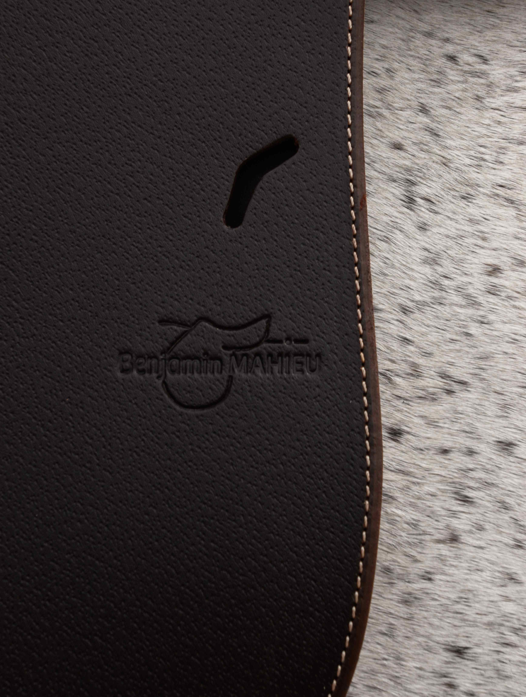

Me
contacter
Un simple échange suffit souvent
N'hésitez pas à me contacter pour en discuter. Chaque cheval est différent. Un simple échange permet souvent d'orienter vers la solution la plus adaptée.
Benjamin se déplace directement dans votre écurie. Il intervient dans un rayon adapté autour de sa zone principale — n'hésitez pas à lui demander si votre secteur est couvert.
Pour toute demande de diagnostic, modification, ou renseignement sur la gamme de selles neuves, vous pouvez le joindre par téléphone ou par email.

Benjamin se déplace dans votre écurie
Toutes les interventions se font directement sur place, dans les conditions habituelles de votre cheval. Benjamin ne travaille pas en atelier de dépôt — le diagnostic et l'ajustement se font toujours avec le cheval présent.
Sa zone d'intervention principale couvre le Nord et les départements limitrophes. Pour les demandes hors zone, n'hésitez pas à le contacter directement — des déplacements ponctuels plus lointains sont parfois possibles.
Zone d'intervention :
Nord · Pas-de-Calais
et départements limitrophes